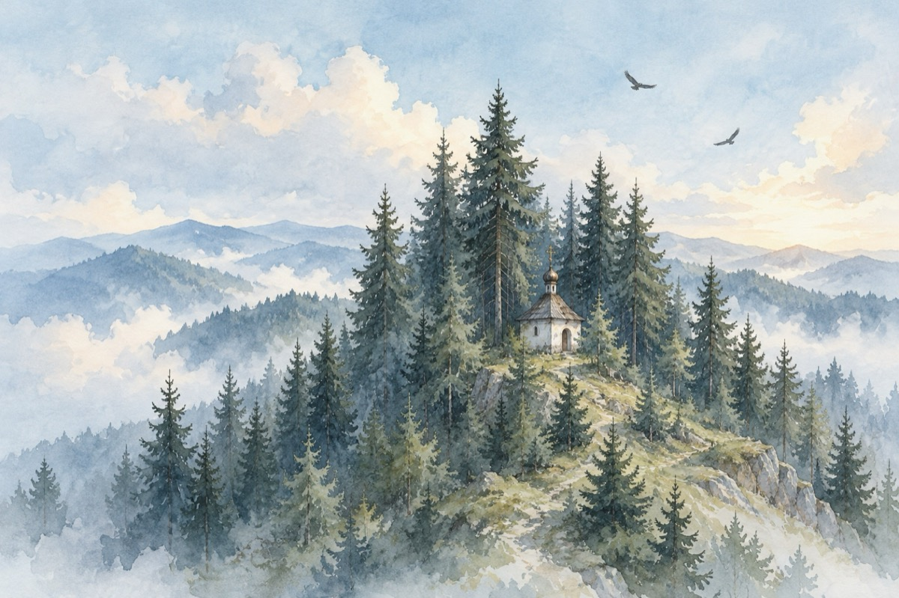

Din nou la Vintileasca
Vintileasca, Vrancea.
Ca o Golgotă te înalți
În a istoriei tezaur
Cu voievozi, robi împărați
Purtând pe cap cununi de laur.
Aicea Dumnezeu și-a pus pecetea
Iar frumusețea s-a născut
Adam și Eva au făcut perechea
În raiul lor de început.
Olimpul românesc pe-naltul loc
Traian și Decebal, Ștefan cel Mare
Și astăzi vrednicia părintelui Potop
Se-nalță către cer credință și-nchinare.
Noi, robii zilelor de azi
Ai frământatelor istorii
Am rezistat precum pădurile de brazi
Păstrând cât vezi cu ochii
Tradiția, legenda marilor victorii,
Numele Domnului, fie lăudat!
Pentru acest măreț și vrednic colț de rai!
Unde noi astăzi în sfânt locaș ne-am adunat,
înVintileasca, pe mioritic plai!
Vasile Groza